作战计划
原页面：Battle plan
作战计划是一项重要工具，能帮助玩家直观地了解其师将如何推进，允许 AI 自动控制玩家的师，并可以提供计划加成。不绘制计划也能给师下达命令，但通常建议绘制，因为计划可减少微操、改善游戏节奏，并提供能抵消处于高度构筑工事状态的敌人所享优势的部队表现加成。
如有需要，同一集团军内的不同师可以分配到不同的作战计划。在这种情况下，玩家通常必须手动将师分配到各条前线，否则它们会默认归入所绘制的第一条前线。
作战计划的一个示例是：在敌军防线以北对意大利发动大规模登陆，目的是击溃正忙于应对南面交战的敌人。玩家可以设置并分别激活一次或多次两栖登陆、空降以及由已与敌接触的地面部队发起的进攻，各自选择自认为最佳的时机。其中一些计划命令可以设置为由玩家同时执行，另一些则可设置为按顺序依次发生；无论哪种情况，玩家都只需按住 Shift 并点击该特定命令即可按需激活它，并且可以在激活之前或之后更改计划的该部分或其所属部队。这样，一支集团军的不同部分就能在总体战略下为玩家执行不同任务，正如二战中的军为各国陆军执行不同任务一样。此类复杂计划的使用是可选的，但当玩家必须同时或分阶段发起多场不同作战时，偶尔会非常有用。
要为陆上进攻作战制定作战计划，玩家必须首先划定一条前线——这是集团军群开始作战的起点。选择「前线」按钮或按Z，然后在地图上沿国境线或双方当前接触线点击或拖画出一条线，以标明集团军当前选中的师将在何处集结。接着点击进攻线按钮（一条带箭头的线）或按X，绘出各集团军应从前线向前推进的目标线。
绘制作战计划
选中一支集团军（由将领指挥）或一个集团军群（由元帅指挥）时会打开作战计划工具栏，作战计划工具即可在其中使用。
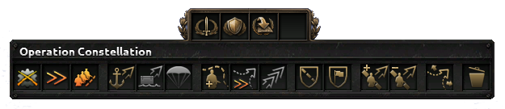
关于这些按钮
- 演习
- 师分配模式
- 取消分配师
- 编辑模式
- 删除命令
参见条目快捷键#作战计划快捷键。
使用该按钮
- 谨慎执行作战计划
玩家可以选择以谨慎、均衡或激进的方式执行作战计划。
各按钮的用途
将在以下各节中介绍。
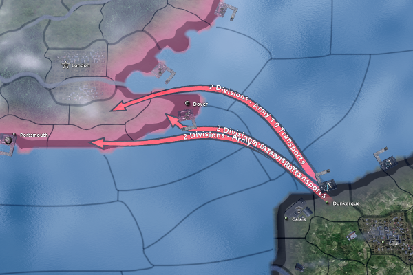
海军登陆是对敌方领土发动的两栖攻击。它是在敌人最意想不到的地方开辟新战线的极为强大的工具。
选择海军入侵命令时，玩家需要左键点击一个有海军基地的省份作为出发地，然后右键点击要入侵的敌方省份。陆军会自动在出发的海军基地集结以准备突击。
海军登陆可以从玩家可使用任意友方港口发起。这意味着可以从一个并未与敌人交战的盟友的港口发起对敌方领土的入侵。
容量
海军登陆受两个独立上限的限制：
- 海军登陆师数上限——单个海军登陆命令可分配的最大师数，以及
- 海军登陆计划上限——可同时准备的海军登陆命令的最大数量。
基础值为每个命令4 个师、同时1 个计划。两个上限都可通过研究海军运输科技提高。没有 全民持枪时，它们来自基础的海军科技树；拥有全民持枪时，则来自对应的海军支援
全民持枪时，它们来自基础的海军科技树；拥有全民持枪时，则来自对应的海军支援 科技树。
科技树。
| 年份 | 科技（基础科技树） | 入侵师数上限 | 海军登陆计划上限 | 其他入侵加成 |
|---|---|---|---|---|
| 1922 | +2 | +2 | −30 准备天数 | |
| 1940 |  登陆艇 登陆艇
|
+2 | +2 | +15% 入侵防御；−30 准备天数 |
| 1944 | +8 | +4 | +25% 两栖入侵；+50% 入侵防御；−15 准备天数 |
| 年份 | 科技（海军支援科技树） |
入侵师数上限 | 海军登陆计划上限 | 其他入侵加成 |
|---|---|---|---|---|
| 1922 | +2 | +1 | −10 准备天数 | |
| 1940 | 登陆艇
|
+4 | +3 | +15% 入侵防御；−10 准备天数 |
| 1944 | +5 | +4 | +25% 两栖入侵；+50% 入侵防御；−10 准备天数 |
选择提升海军陆战队或远征特遣部队（位于 反抗暴政特种部队科技树中），可分别提供+2额外师数上限和+1额外计划上限。若干国策、理念和军工组织也会提供入侵上限修正。
反抗暴政特种部队科技树中），可分别提供+2额外师数上限和+1额外计划上限。若干国策、理念和军工组织也会提供入侵上限修正。
分配师数超过师数上限的海军登陆命令不会执行。地图上会显示箭头，但带有文字“无师 0 运输船”。已分配的师会保留表示其没有命令的! 红色感叹号。
一个国家的入侵容量以师的数量衡量，而不是总重量或战斗宽度。更宽、更强的师编制让玩家能够执行更强的入侵，代价是需要更多运输船队（见运输船队）。
准备时间
海军登陆在执行前需要时间准备。所需的确切时间取决于科技以及要运送的师的数量。仅拥有第一级海军登陆科技时，1 个师的入侵需要 7 天的准备，10 个师的入侵则需要 70 天。登陆艇科技（1940）和坦克登陆艇（1944）可进一步缩短所需时间，机动战争和优势火力陆军学说以及基地打击存在舰队子学说也有同样效果。
计划会立即开始推进，即使各师仍在前往出发港的途中。
只要不超过计划上限，就可以从不同港口并行准备多场入侵，甚至针对同一目标省份，从而节省总准备时间。也可以从同一港口准备针对不同目标省份的多场入侵。
运输船队
要把部队运往海外，需要足够的运输船队。单个师所需的运输船队数量取决于其重量；重量等同于运送一个师所需的运输船队数量。所需运输船队数量向上取整。科技可以减少入侵所需的运输船队数量。
| 重量 | 0.1 | 0.5 | 0.6 | 0.75 | 0.8 | 1.0 | 1.25 | 1.5 | 1.75 |
|---|---|---|---|---|---|---|---|---|---|
| 营 |
|
|
|
|
|
|
|
|
|
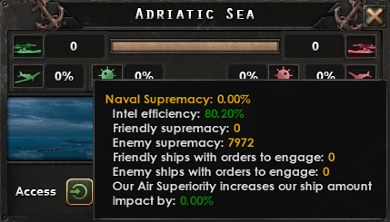
制海权会在海军情报效率较低时随之降低。当情报为10%或更低时，制海权会降至其标称值的50%。该惩罚会线性改善，并在情报达到40%时消失。
某个海区的海军情报效率实际数值可以在点击海区后打开的海区属性窗口中查看，需要将鼠标悬停在制海权条上。或者，将鼠标悬停在战略海军地图模式（可通过F2按钮打开）中的某个海区上也可以看到。
某个海区的海军情报效率由你从与其交战且在该海区拥有舰船的国家所获得的情报计算得出。如果未处于战争状态，你在所有地方都拥有 100% 的海军情报效率。如果与一个国家交战，在该国未分配舰船的所有海区中，你拥有 100% 的海军情报效率（敌方制海权值为 0）。在该国分配了舰船的海区中（敌方制海权 > 0），海军情报效率就是你对该国拥有的情报。如果与多个国家交战，且其中不止一个国家在同一海区拥有舰船，则海军情报效率会向在该海区拥有更多制海权的国家加权。
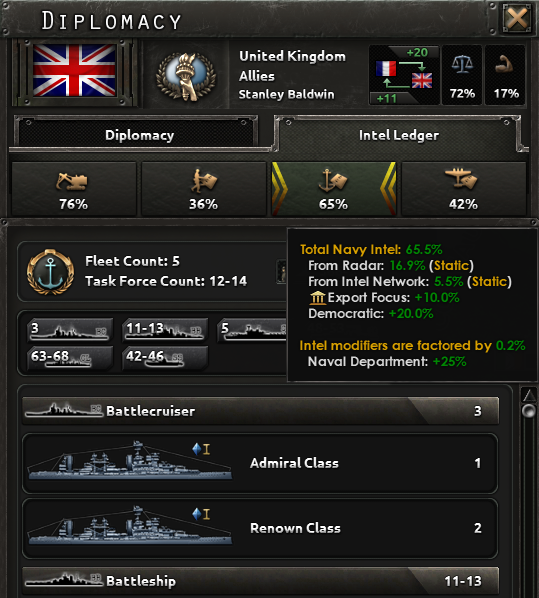
需拥有 DLC《抵抗运动》 ，你对某个国家拥有的情报可以在该国的情报账本中查看。将鼠标悬停在情报账本的海军部分上时，可以看到海军情报是如何计算的。
，你对某个国家拥有的情报可以在该国的情报账本中查看。将鼠标悬停在情报账本的海军部分上时，可以看到海军情报是如何计算的。
有若干因素会影响海军情报效率。针对某个特定敌国的海军情报效率以 0 到 100 之间的百分比表示，为以下各因素之和：
影响海军情报效率的共同因素：（拥有和不拥有抵抗运动时）
- 敌方意识形态（民主主义：20%，中立主义：20%，共产主义：12.5%，法西斯主义：10%）
- 敌方贸易法令（自由贸易：20%，出口导向：10%，有限出口：5%，封闭经济：0%）
- 雷达覆盖（覆盖了任意海域且有敌方舰船在执行任务的雷达，最多可提供 20% 海军情报效率。每座雷达收集的海军情报是按国家计的单一数值，而非按海域计。某座覆盖英吉利海峡的雷达收集到的关于英国的海军情报，可以为在地中海的海军入侵提供海军情报效率。）
- 与敌方海军交战（从海战中获得的海军情报每周约衰减 -0.2%。）
仅在 DLC《抵抗运动》下对海军情报效率生效的因素：
将海军部升级为情报机构可使海军情报效率提高其总值的 +25%，即乘以 1.25。
仅在不拥有 DLC 抵抗运动时影响海军情报效率的因素：
- 己方解密等级与敌方加密等级
Own Decryption level 0 1 2 3
Enemy Encryption level 0 0% 30% 45% 60% 1 0% 15% 22.5% 30% 2 0% 10% 15% 20% 3 0% 7.5% 11.25% 15%
使用 DLC《抵抗运动》的示例：
如对侧图片所示：民主主义意识形态（20%）、出口焦点贸易法令（10%）、雷达覆盖（16.9%）和特工网络（5.5%）合计为 52.4%，再乘以来自海军部的 1.25，得到针对此特定英国的海军情报效率总计为 65.5%。
不拥有 DLC 抵抗运动时的示例：
如果你不使用 DLC 抵抗运动，并想海军登陆一个法西斯国家（10%），该国拥有封闭经济（0%）且已研究加密等级 3，而你拥有解密等级 3（15%）且没有任何覆盖敌方领土的雷达：你的海军情报效率为25%，这会使你的制海权降至正常值的 75%。
要执行海军登陆，一个国家需要拥有超过 50%制海权（在某些提示中也被称为“海军优势”），并且需要在前进途中经过的各在所有战略地区中（海区）中满足这一条件。它们就是海军登陆作战计划箭头所经过的区域。
要想获得制海权，你必须至少拥有40%海军情报效率。
一支海军的制海权取决于它执行何种任务类型、它在该区域上的有效程度、它拥有的舰船数量以及它们的规模大小。某个战略区域（海区）中的制海权是分配到该区域的特遣舰队制海权之和。
按海军任务提供的制海权：
| 任务 | 制海权（占基础值的比例） |
|---|---|
| 巡逻 | 75% |
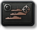 打击舰队 |
100% |
| 海军登陆支援 | 100% |
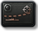 破交作战 |
25% |
| 50% | |
| 布雷 | 25% |
| 扫雷 | 25% |
| 海军演习 | 0% |
| 待命（在港内和港外） | 0% |
更大的舰船为更多的制海权作出贡献。例如，意大利早期战列舰意大利皇家海军 安德烈亚·多里亚号在执行打击舰队任务时提供约 356 点制海权，而单艘库拉托内级意大利早期驱逐舰提供约 117 点。单舰制海权随舰船的生产成本和人力而变化；确切的常数目前未在定义文件中公开，由引擎决定。
处于不交战命令下的特遣舰队不会为制海权作出贡献。
制空权与布雷会为制海权提供加成。来自制空权的最大可能加成为舰船数量 +100%，即每艘舰船按两艘计算。当制空权达到 100% 且有足够飞机覆盖 100% 的海域时即可实现。
制海权只需在短瞬间内拥有，就足以让已准备好的入侵得以发动。此后入侵将在制海权不足时继续推进。一旦海军登陆得到妥善计划、达成制海权和海军情报效率并集结了足够的运输船队，计划就可以激活。
入侵运输途中
入侵的师乘坐运输船队逐省穿越海域，并像补给和贸易运输船队一样可能被敌方舰队和轰炸机拦截。建议为运输船队提供护航，以免敌人集结其整支舰队拦截入侵舰队。
当入侵者抵达海岸并开始下船时，被入侵方会收到带有图标和声音的通知，并有短暂时间来集结防守部队。
入侵速度可通过科技提高，而运输船队遭受攻击会大幅拖延入侵速度。
入侵战斗
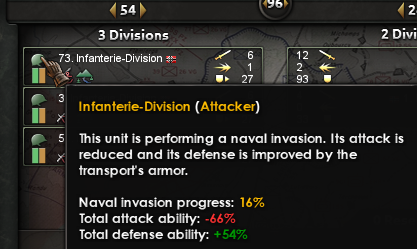
如果入侵遭遇抵抗，与跨越海峡进攻类似，登陆部队在随后的战斗中会获得默认的50%[1]攻击与突破惩罚（见地形#地形特征）。师的“两栖”调整项可以改变该惩罚。重型装备通常会加重惩罚，而海军陆战队、工兵、两栖车辆和喷火坦克表现更好（见 地形#单位专属调整值
地形#单位专属调整值 ）。
）。
考虑使用舰炮支援来支援入侵，以及任何射程内的近距空中支援。
此外，各师在受到运输船保护时突破（+50%[2]）提高，但攻击（-80%[3]）降低。这些效果会随着登陆推进、部队离开登陆艇而逐渐消失[4]，以移动进度衡量（通常在 48 小时后结束[5]）。两栖入侵速度修正可使部队在这一登陆进度上获得先手，从而更快达到正常战斗效能。
主要由后期登陆艇科技提供的入侵防御修正有两个独立效果：
- 它与+50%起始突破加成相加，但同样会逐渐消失；
- 它以乘法方式改善登陆惩罚：有效惩罚为(−0.5 + 修正)乘以最大(0, 1 − 入侵防御 ÷ 3.5)。[6]
入侵之后
除非入侵的师已夺取港口或城市，否则它们可能与补给断绝，必须在补给耗尽前的 72 小时内达成这些目标。浮动港口会在登陆省份提供一个临时补给枢纽，让入侵者有几周时间来确保替代的补给来源。
空降
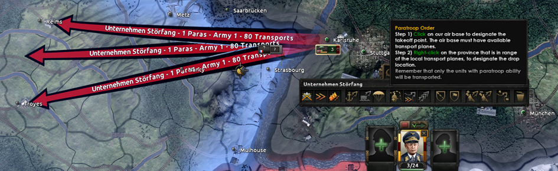
伞降是一种作战计划命令，它使用运输机把一个或多个可伞降的师投送到目标省份。只要集团军中至少有一个可伞降的师，作战计划工具栏中就会出现伞降命令按钮。选择该按钮后，玩家必须左键点击一个至少含 50 架运输机的空军基地所在省份，然后右键点击一个在运输航程内的省份作为伞降目标。
执行伞降命令需要为该命令所分配的师数量提供足够的运输机（默认每个师 45 架），并且在所有所需区域拥有中立或 70% 的制空权。
师编制要求
要具备伞降能力，一个师的一线营和支援连中必须只包含可伞降的营。可伞降的师会在师编制设计器窗口左上角的降落伞图标上显示对勾。可伞降的营在营级选择时会在其单位图标中显示降落伞符号。目前作为一线营只有伞兵营可伞降。可伞降的支援连列于下表；其他所有支援连都不能伞降。
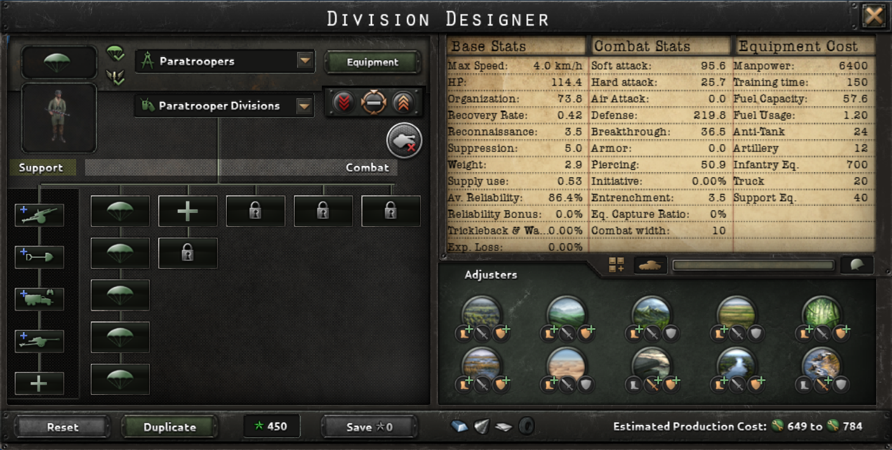
- 支援防空连
- 支援反坦克连
- 支援火炮连
- 支援火箭炮连
- 骑兵侦察分队
- 摩托化侦察连
- 轻型装甲侦察连
- 工兵连
- 军事警察
- 维修连
- 野战医院
- 后勤连
- 通信连
- 直升机医疗后送

- 空降轻型装甲

- 先锋工兵
- 侦察游骑兵连
运输机要求
创建空降命令需要出发空军基地至少有 50 架可用运输机。[7]拥有这一最低数量的空军基地在创建空降命令时会以蓝色高亮显示。要被判定为可用，运输机不得被分配到其他空中任务、不得处于运输途中，并且必须通过当地补给系统获得足够的燃料补给。
命令创建后，执行空降命令需要在出发空军基地为分配到该命令的每个师[8]提供 45 架可用运输机。该要求可能按以下方式修正：
| 已分配师数 | 基础需求 | 应用修正后 | ||
|---|---|---|---|---|
| 滑翔机 | 学说 | 滑翔机 + 学说 | ||
| 1 | 50 | 50 | 50 | 50 |
| 2 | 90 | 81 | 50 | 50 |
| 3 | 135 | 122 | 68 | 61 |
| 4 | 180 | 162 | 90 | 81 |
| 5 | 225 | 203 | 113 | 102 |
| 6 | 270 | 243 | 135 | 122 |
| 7 | 315 | 284 | 158 | 142 |
| 8 | 360 | 324 | 180 | 162 |
| 9 | 405 | 365 | 203 | 183 |
| 10 | 450 | 405 | 225 | 203 |
| 11 | 495 | 446 | 248 | 223 |
| 12 | 540 | 486 | 270 | 243 |
- 如果指挥这些师的将领拥有伞兵指挥官特质，他将能使用滑翔机能力，在七天内把运输机需求降低 10%（即基础需求 × 0.9），代价是每个营 0.1 指挥点数。
- 拥有 DLC 反抗暴政 时，特种部队学说“战略空运军”可将运输机需求降低 50%（即基础需求 * 0.5）。
- 如果“滑翔机”和“战略空运军”同时生效，其效果以乘法叠加（即基础需求 * 0.9 * 0.5）。这两个修正都不会覆盖特定空降命令 50 架的最低要求，但对于两个师及以上的情况，它们实际上会减少所需飞机数量。
右侧表格汇总了在任意生效修正下最多 12 个师的运输机需求。
如果从同一空军基地发起多条命令，在单条命令的飞机足够、但不足以让所有命令同时进行时，同一批运输机会被分批多次用于不同命令。选择执行按钮后，这些命令会按创建顺序自动分批发起，并持续到最后一条命令，除非后续空降命令的要求不再满足（例如相关区域制空权不足，或因飞机损失导致剩余命令飞机不足）。每条命令约需 4 到 8 小时完成，因此用较少飞机分批执行的最大缺点是整体空降行动时间延长，可能给敌人留下反应时间。
分配到空降命令的运输航空队必须有充足的补给才能起飞。当运输航空队缺乏飞行所需燃料时，在执行空降命令时会被视为不可用。降低空军基地所在省份的补给消耗或改善补给基础设施应能解决此问题。
目标省份要求
每条空降命令都以一个目的地省份为目标，无论该省份位于友方还是敌方领土。以友方（本国或盟国）领土为目标的空降命令可随时执行。针对非盟国领土的空降命令需要处于战争状态才能执行。
目的地省份必须在运输航空队的航程内，航程会因航空队内飞机的科技等级而异。选择出发空军基地后创建命令时，航程内的省份会以绿色高亮显示。属于地理中心位于运输航空队航程之外的航空区域的省份不会被视为在航程内，即使该省份本身位于运输航空队的航程圈内。
制空权要求
空降命令的出发、航路和目的地区域必须为中立方空域或拥有至少 70% 制空权才能执行。[9]中立空域定义为航空区域内没有任何友方或敌方空军任务。
如果多条空降命令经过不同的航空区域，在各自相关区域内拥有足够制空权的命令会发起，而制空权不足的则不会发起。有可能在某些批次中短暂拥有制空权，但在后续批次中失去。当相关区域重新获得制空权时，待发的批次会自动发起。
空降命令界面与提示
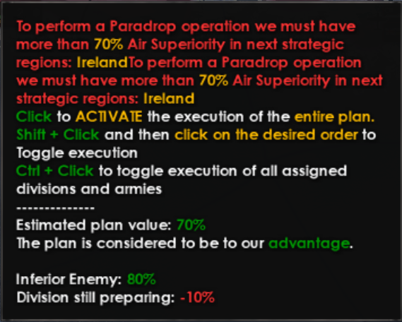
空降机制提供若干界面组件，用于显示空降命令的相关信息。该界面中的某些信息并不直观，因此提供以下指引。
执行按钮——集团军图标上方的绿色执行按钮在鼠标悬停时会显示提示，其中的信息对所有集团军命令通用。对于空降命令，该提示还会指出一个或多个相关区域制空权不足是否会阻止命令执行。与海军登陆不同，这里没有进度条或倒计时数字，因为空降命令没有固定的准备时间，只要分配的伞兵连同运输机到位就可以发起。
空降命令箭头——空降命令会显示在地图上出发空军基地与目的地省份之间。箭头上的文字显示命令名称、师的数量以及分配到该命令的运输机。如果命令没有分配任何师，箭头会以虚化状态显示。执行命令之前，箭头为实线且静止。执行后，箭头会变为虚线并带有动画，直到运输机真正开始起飞，此时它会变为虚线且静止。这可能让人以为命令没有生效，但伞兵应在数小时内开始降落到其空投区。
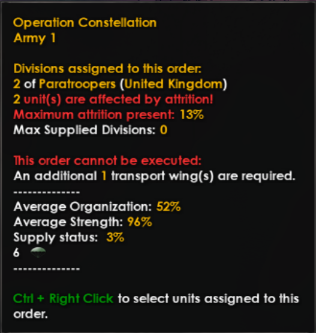
伞降命令箭头提示框——将鼠标悬停在伞降箭头上会显示一个包含更详细命令信息的提示框，若运输机航空队不足或存在师损耗也会显示警告。悬停在水域上时不会显示提示框，只在陆地上显示。
- 如果因任何原因（飞机数量、飞机执行其他任务、补给不足等）导致空军基地可用运输机不足，运输航空队不足警告会在命令执行前和执行期间显示。额外所需运输机以航空队数量而非单架飞机来表示，因此这一指标往往较为模糊。即使运输机充足且伞兵正在空投，命令执行期间提示中也可能显示运输航空队不足警告。
- 师损耗警告表示该师正在损失兵力，若发起将表现不佳。仅凭师损耗并不会阻止发起命令，但出现损耗可能说明该地区补给不佳，这可能因燃料不足而导致运输机无法起飞。
空降结果
伞降一旦执行，如果投送受到干扰，该师可能会遭受损失。这些损失介于该师兵力的54.5%[10]至90%[11]之间，包括47.4%[12]至99%[13]的其 人力，以及33.3%[14]至98%[15]的其装备，并且无论实际干扰程度如何，所有因素都会额外带有10%[16]的随机量。即使目标省份为空，即其中没有敌方师，这类损失也可能发生。基于对同一次投送的反复测试（即同一存档下的同一命令），这类损失似乎并不取决于制空权（即即使在 100% 制空权下也会发生），但防空会影响一个师受到干扰的程度。
人力，以及33.3%[14]至98%[15]的其装备，并且无论实际干扰程度如何，所有因素都会额外带有10%[16]的随机量。即使目标省份为空，即其中没有敌方师，这类损失也可能发生。基于对同一次投送的反复测试（即同一存档下的同一命令），这类损失似乎并不取决于制空权（即即使在 100% 制空权下也会发生），但防空会影响一个师受到干扰的程度。 [17]这类损失在较高纬度投送（例如在挪威或中国北方）或投送到沿海省份时似乎也发生得频繁得多。
[17]这类损失在较高纬度投送（例如在挪威或中国北方）或投送到沿海省份时似乎也发生得频繁得多。
各师空降后组织度为40%[18]，无论其是否被打乱。此后其恢复速度会受到-80%[19]惩罚，持续 120[20]小时。其战斗中的攻击和防御也会受到-30%[21]惩罚，持续 48[22]小时。
 滑翔机能力可以让伞降更有效，如果配合拥有
滑翔机能力可以让伞降更有效，如果配合拥有 伞兵特质的指挥官。这会使接下来 7 天内伞降的师以高得多的组织度着陆（最高100%），并减少受干扰造成的损失，代价是消耗指挥点数。
伞兵特质的指挥官。这会使接下来 7 天内伞降的师以高得多的组织度着陆（最高100%），并减少受干扰造成的损失，代价是消耗指挥点数。
前线与进攻线
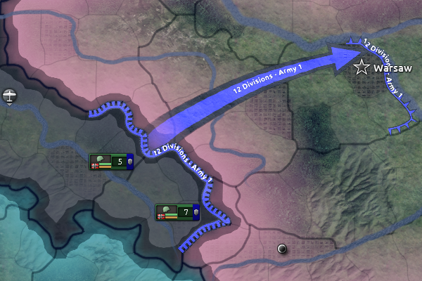
前线是向敌方领土发起进攻的起点。玩家既可以点击边界来把整个国家的边界指定为前线，也可以按住鼠标右键并拖过希望纳入前线部署区域的省份，从而只把国家边界的一部分指定为前线。随后 AI 会把所有师移动到指挥官为该前线指定的位置。这些师可以是在点击前线按钮时被选中的，也可以是之后选中它们并按 Ctrl 点击该前线来加入的。玩家还可以创建几条互不相连的前线并在其间分配师，这对可能指挥无限数量师、在世界各地执行各种行动的陆军元帅来说尤其有用。驻扎在与非盟友接壤的前线上的师，会因其进攻前的准备时间而获得计划加成。前线只能设置在边界上，而敌对双方之间的战线在此意义上也算作边界。
进攻线是玩家穿过敌方省份绘制的一条线，这些省份包含供分配部队前往并夺取的目标。玩家可以从前线或另一条进攻线出发，绘制一条或多条进攻线或箭头，告诉 AI 希望所选计划中的师如何从前线推进。进攻线的宽度和弧度可按提示中所述进行调整。如果将鼠标光标拖过进攻线或箭头，游戏会逐步显示 AI 将如何推进师的确切可视化预览。用 ALT 进入编辑模式、用 TAB 移动箭头基点，有助于引导主攻方向。
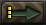
执行作战计划的命令通过指挥官头像上方的按钮下达，提示中会提供参谋部关于该作战计划的信息和建议。随后 AI 会执行作战计划，直到部队抵达其进攻线，此时该进攻线就成为新的前线。如果该前线之外还有进攻线命令，则必须再次按下执行按钮，从新前线继续推进。在大规模攻势的各阶段之间，暂停以休整、补给、整编、重新集结并协调后续计划是常见做法。这也是抽调部队巩固对占领区控制的良机，通常涉及专门用于压制骚乱的小型师。「驻防区域」作战计划命令就是在这种情况下使用的。前线与进攻线的更多示例
前线与进攻线的更多示例
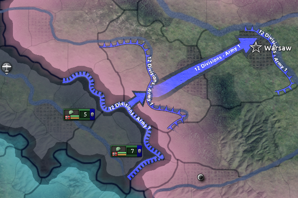
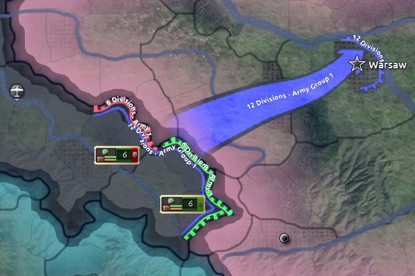
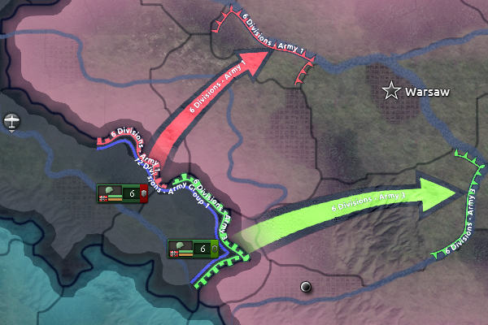
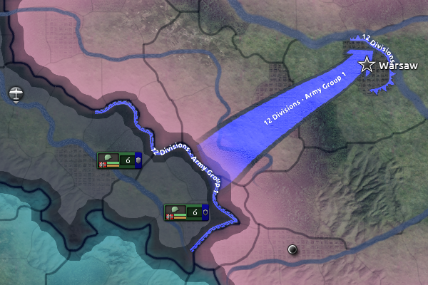
突击
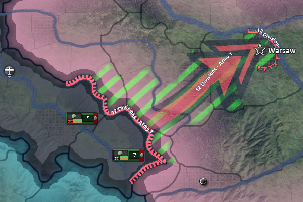
突击命令从前线开始，可以在集团军内与进攻线配合使用，也可以替代进攻线。与展开以掩护侧翼并随机应变的普通作战计划不同，突击会沿一条宽度为一个省份的狭窄路径向目标推进，完全按照最初划定的路线前进。这使其适合闪电战式的装甲突破，可用于夺取特定目标，或与另一支突击部队形成钳形攻势，将敌方城市或军队包围成口袋，由随后跟进的机动师和普通步兵师封成钢铁之环。被包围的军队由此可被歼灭，因为溃败的师若无友方领土可退，就会被消灭。
突击（快捷键「SHIFT + X」）只能用于越过进攻军队前线之外的领土，或用于分配给海军登陆的领土（坦克直接从登陆艇投入战斗）。它也只能作为军的命令下达；突击不能以整个集团军为单位使用。突击会沿着玩家在地图上按住鼠标右键拖过一连串省份所描绘的精确路径推进。这可以让进攻部队规划出一条绕过要塞、城市或其他不利地形的路线，以保持进攻势头。
撤退线
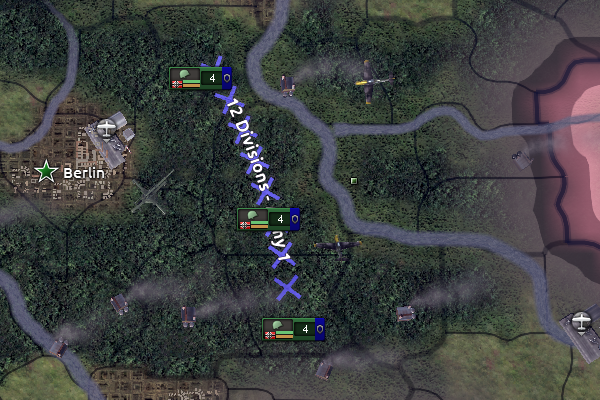
玩家可以在己方控制的领土上绘制撤退线，命令执行后，这会指示 AI 以与前线相同的方式把各师移动并部署到撤退线之后，坚守该线抵御敌军进攻，并在防线被突破时实施反击以恢复原有阵地。与前线不同，驻守撤退线的师不会获得计划加成；不过，长期驻扎在某个省份的师可以在原地积累构筑工事加成。
区域防御
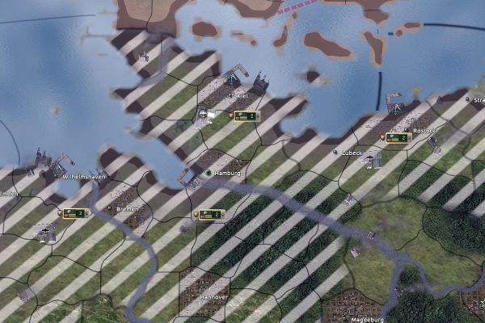
区域防御会把整个军指派去守卫一片区域，而不是一条前线。它主要用于防范海军登陆和伞兵。由于各师是分散在一个或多个州而不是集中在某一位置进行防御，这种姿态不适合在前线附近使用。如果区域的一部分被敌军占领，驻防单位会自动尝试收复失地。
防御命令包含多个子项（见图示）：
- 保护胜利点
- 守卫港口
- 守卫海岸
- 保护空军基地
- 守卫要塞
- 守卫补给中心与铁路
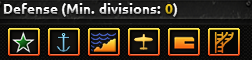
玩家可以选择要守卫其中哪些目标，界面会告诉玩家 AI 认为需要多少师才能满足该命令。驻防区域命令会使指挥官麾下的单位上限提升至三倍，达到 72 而不会受到减益。
关于防御某地区以对抗游击队，请见驻军。
计划加成
当一个师位于进攻作战计划（即包含至少一条进攻线或突击命令的作战计划）的起始位置，且既不在移动也不在战斗时，它会在每天开始时积累计划加成，以百分比表示，直到达到最大计划加成。这能为该师带来更强的战斗表现。即使单位没有被分配到带有该进攻作战计划的前线，只要该单位隶属于拥有该前线的同一指挥官，也可以积累计划。例如，如果玩家绘制了一条元帅前线并带有进攻作战计划，然后手动把隶属于该元帅麾下某位将领的若干师移动到前线附近，即使这些师没有被分配到该元帅的前线，它们也会开始积累计划。
计划加成是一种战斗修正，每 1% 计划使攻击和突破提高 1%。
每个师的最大计划加成（初始上限为30%[23]），或每日计划加成累积速率，可以通过某些陆军学说选择和国家精神来提高。每日基础获取量为2%[24]，因此需要例如 15 天才能累积到 30% 的上限。使用一名上将也会同时提高最大计划加成和每日计划加成累积速率。上将每点计划能力会贡献 +2% 最大计划加成，以及 +5% 的每日计划加成累积。不过，那 +5% 的每日计划加成是对 2% 每日基础速率的乘法加成。举例来说，使用一名计划能力为 4 的上将，他们会提供 +8% 最大计划加成（假设没有其他加成，即 30% + 8% = 38%），而每日计划加成累积将为 2.4%（2% × (1 + (4 × 5% = 20%)) = 2.4%）。继续这个例子，现在需要 16 天才能完成完整的计划加成（38% / 2.4% = 15.83 天）。指挥官，尤其是陆军元帅，还可以通过某些特质来提高最大计划加成和／或计划速度，例如 组织者、
组织者、 快速规划者和
快速规划者和 缜密规划者。各种陆军学说也能提高计划速度或最大计划加成，军官精神如
缜密规划者。各种陆军学说也能提高计划速度或最大计划加成，军官精神如 临机应变以及某些政治顾问同样如此。
临机应变以及某些政治顾问同样如此。
若要快速提高计划加成，玩家可以使用 参谋部计划能力，它能在 7 天内把计划速度提高+400%，代价是消耗指挥点数。
参谋部计划能力，它能在 7 天内把计划速度提高+400%，代价是消耗指挥点数。
当带有计划加成的师在移动或战斗时，它每天都会损失一部分计划加成。如果该师由作战计划 AI 自动管理，其计划加成每天衰减1%[25]。如果该师由人类玩家手动指挥，则计划加成每天衰减3%[26]。
计划通常不能用于海军登陆，因为海军登陆的计划获取会承受-100%[27]惩罚，尽管其基础获取为每天2%[28]计划。不过，拥有 反抗暴政时，若选择了远征军单位中的海军陆战学说，第一项惩罚会降至-80%，使所有分配到海军登陆的单位都能随着时间缓慢积累计划。
反抗暴政时，若选择了远征军单位中的海军陆战学说，第一项惩罚会降至-80%，使所有分配到海军登陆的单位都能随着时间缓慢积累计划。
「Strategy」
由于达到最大计划加成需要若干天，因此在和平时期就开始准备作战计划可能是值得的，这样每个师在战争爆发时都能拥有完整的计划加成。
如果玩家希望尽量降低计划加成的衰减速度，准备一份包含多条命令的复杂作战计划可能会有所帮助。这可以让各师无需玩家手动下达命令即可达成目标。[29]
或者，人类玩家可以微操自己的师，以实现更精细的控制或应对局势变化的能力。这是一种权衡，因为下达手动命令时计划加成会流失得更快。
手动控制与作战计划；支援攻击
属于某个作战计划并收到手动命令的师，在执行完该命令后会重新交由 AI 控制。
一旦进入战斗，玩家可以选择一个尚未交战的师，然后对战斗图标按 Ctrl+右键（或 Ctrl+Alt+右键），让所选师加入支援攻击。这使该师能够协助进攻，而不会在胜利后自动推进到敌军占领的区域。作战计划 AI 也可能自动下达此类支援攻击命令。
作战计划与盟友
玩家可以看到盟友的作战计划（该选项可在屏幕右下角开启或关闭）。这在多人游戏中有助于与盟友协调，在单人游戏中则有助于理解 AI 的行动，因为 AI 国家会创建自己的作战计划。
参考资料
- ↑
NDefines.NNavy.AMPHIBIOUS_LANDING_PENALTY = -0.5= -0.5，乘以如下所述的（1 − 登陆防御 / 3.5）系数——见NDefines.NNavy.AMPHIBIOUS_INVADE_LANDING_PENALTY_DECREASE = 3.5 - ↑
NDefines.NNavy.AMPHIBIOUS_INVADE_DEFEND_LOW = 1.5= 1.5 - ↑
NDefines.NNavy.AMPHIBIOUS_INVADE_ATTACK_LOW = 0.2= 0.2 - ↑
NDefines.NNavy.AMPHIBIOUS_INVADE_ATTACK_HIGH = 1= 1.0 且NDefines.NNavy.AMPHIBIOUS_INVADE_DEFEND_HIGH = 1= 1.0 - ↑
NDefines.NNavy.AMPHIBIOUS_INVADE_MOVEMENT_COST = 24= 24.0 /NDefines.NNavy.AMPHIBIOUS_INVADE_SPEED_BASE = 0.5= 0.5 - ↑
NDefines.NNavy.AMPHIBIOUS_INVADE_LANDING_PENALTY_DECREASE = 3.5= 3.5；采用 '40 和 '44 登陆艇科技（登陆防御分别为 0.15 和 0.65）后，实际惩罚降至基础值的约 95.7% 和约 81.4%。 - ↑
NDefines.NAir.MIN_PLANE_COUNT_PARADROP = 50中的 定义文件 - ↑
NDefines.NAir.BASE_UNIT_WEIGHT_IN_TRANSPORT_PLANES = 45中的 定义文件 - ↑
NDefines.NCountry.PARADROP_AIR_SUPERIORITY_RATIO = 0.7中的 定义文件 - ↑
NDefines.NMilitary.PARACHUTE_DISRUPTED_STR_DIV = 2.2中的 定义文件 - ↑
NDefines.NMilitary.PARACHUTE_FAILED_STR_DIV = 10中的 定义文件 - ↑
NDefines.NMilitary.PARACHUTE_DISRUPTED_MANPOWER_DIV = 1.9中的 定义文件 - ↑
NDefines.NMilitary.PARACHUTE_FAILED_MANPOWER_DIV = 100中的 定义文件 - ↑
NDefines.NMilitary.PARACHUTE_DISRUPTED_EQUIPMENT_DIV = 1.5中的 定义文件 - ↑
NDefines.NMilitary.PARACHUTE_FAILED_EQUIPMENT_DIV = 50中的 定义文件 - ↑
NDefines.NMilitary.PARACHUTE_PENALTY_RANDOMNESS = 0.1中的 定义文件。 - ↑
NDefines.NMilitary.PARACHUTE_DISRUPTED_AA_PENALTY = 1中的 定义文件 - ↑
NDefines.NMilitary.PARACHUTE_COMPLETE_ORG = 0.4中的 定义文件。 - ↑
NDefines.NMilitary.PARACHUTE_ORG_REGAIN_PENALTY_MULT = -0.8中的 定义文件。 - ↑
NDefines.NMilitary.PARACHUTE_ORG_REGAIN_PENALTY_DURATION = 120中的 定义文件。 - ↑
NDefines.NMilitary.PARADROP_PENALTY = -0.3中的 定义文件。 - ↑
NDefines.NMilitary.PARADROP_HOURS = 48中的 定义文件。 - ↑
NDefines.NMilitary.PLANNING_MAX = 0.3中的 定义文件。 - ↑
NDefines.NMilitary.PLANNING_GAIN = 0.02中的 定义文件。 - ↑
NDefines.NMilitary.PLANNING_DECAY = 0.01中的 定义文件。 - ↑
NDefines.NMilitary.PLAYER_ORDER_PLANNING_DECAY = 0.03中的 定义文件。 - ↑
NDefines.NMilitary.NAVAL_INVASION_PLANNING_BONUS_MALUS = -1中的 定义文件。 - ↑
NDefines.NMilitary.NAVAL_INVASION_PLANNING_BONUS_GAIN = 0.02中的 定义文件。 - ↑ 关于此点的示例，参见 Zwirbaum 在 Youtube 上的作战计划教程
| 政治 | 意识形态 • 阵营 • 国策 • 理念 • 政府 • 傀儡国 • 流亡政府 • 外交 • 世界紧张度 • 内战 • 占领 • 力量均势 |
| 生产 | 贸易 • 生产 • 建造 • 装备 • 燃料 • 军工组织 • 国际市场 |
| 科研与科技 | 科研 • 步兵科技 • 支援连科技 • 装甲科技（也包括 未拥有绝不后退）• 火炮科技 • 陆军学说 • 特种部队学说 • 海军科技（也包括 未拥有全民持枪）• 海军支援科技 • 海军学说 • 空军科技（也包括 未拥有以血盟誓）• 空军学说 • Engineering科技 • Industry科技 • 特殊项目 • 科学家 |
| 军事与战争 | 战争 • 和平会议 • 陆军单位 • 陆战 • 师编制设计 • 坦克设计 • 陆军编制器 • 集团军 • 指挥官 • 作战计划 • 战斗战术 • 舰船 • 舰船设计（伦敦海军条约）• 海战 • 飞机设计 • 空战 • 经验 • 军官团 • 损耗与事故 • 后勤 • 人力 • 核弹 • 突袭 |
| 间谍活动 | 情报 • 情报机构 • 特工 • 任务 • 行动 |
| 地图 | 地图 • 省份 • 地形 • 天气 • 州 |
| 事件与决议 | 事件 • 决议 |